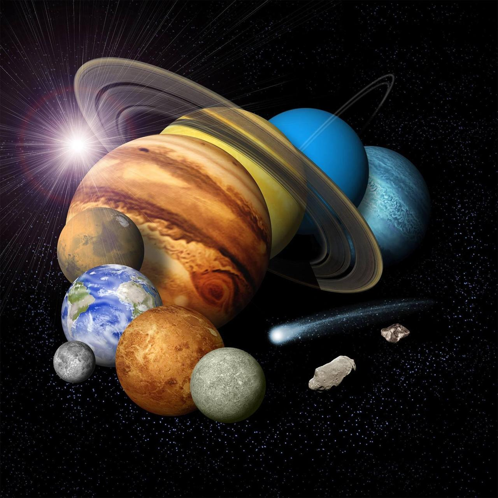
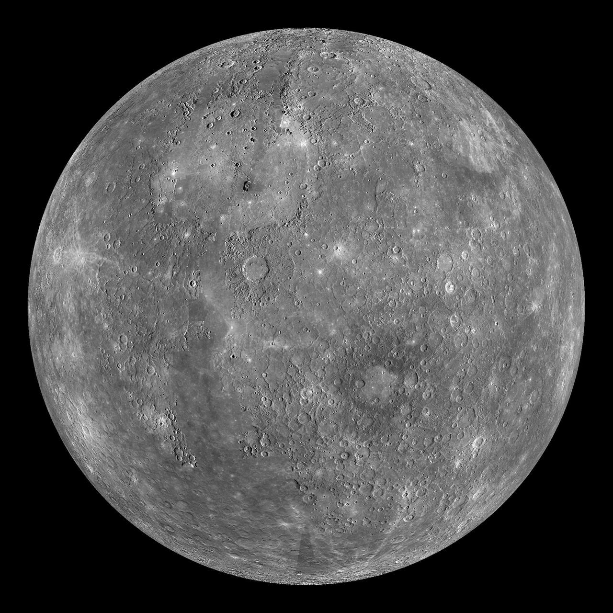
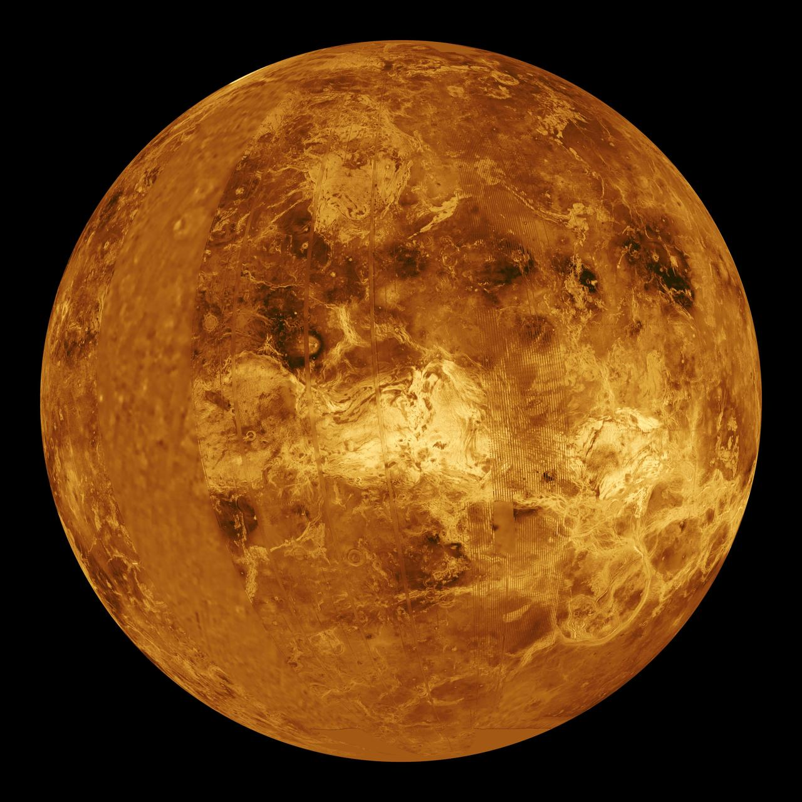
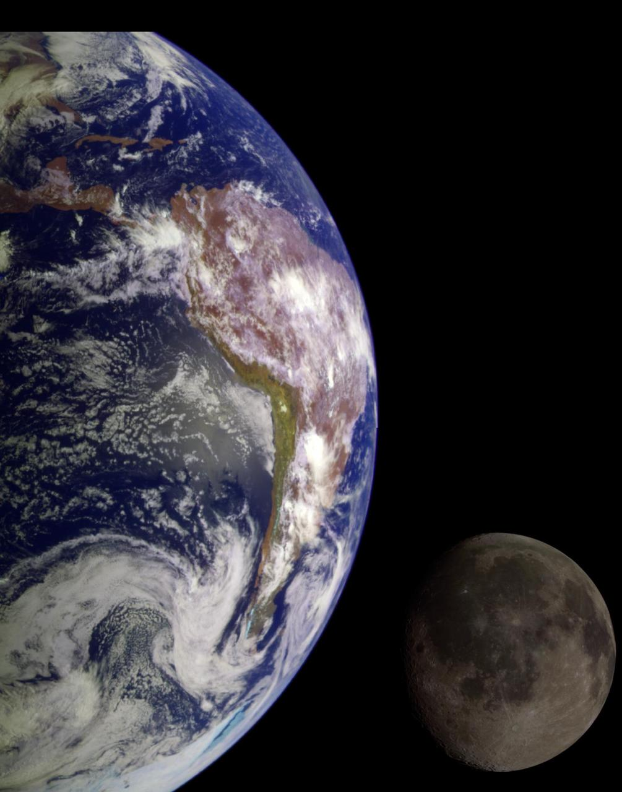
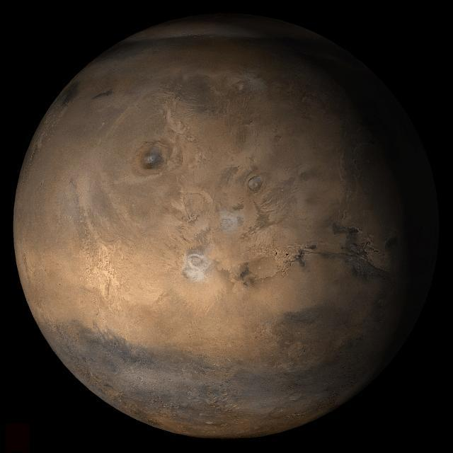
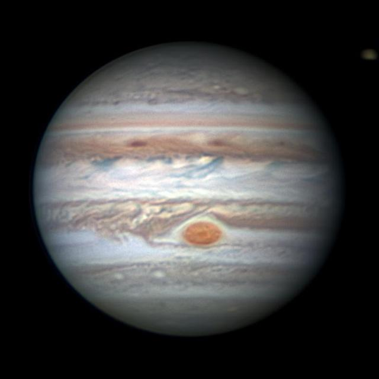
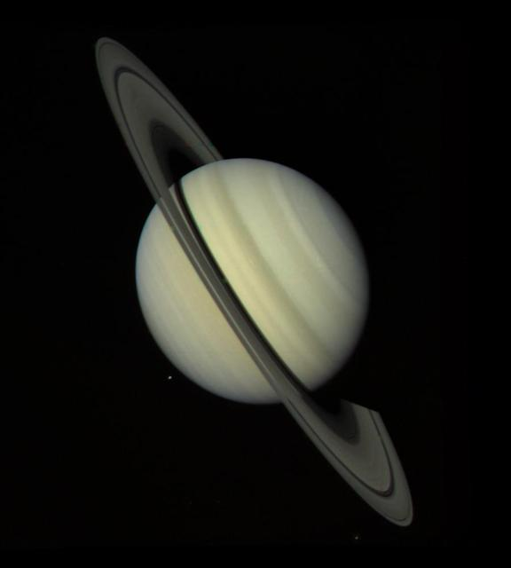
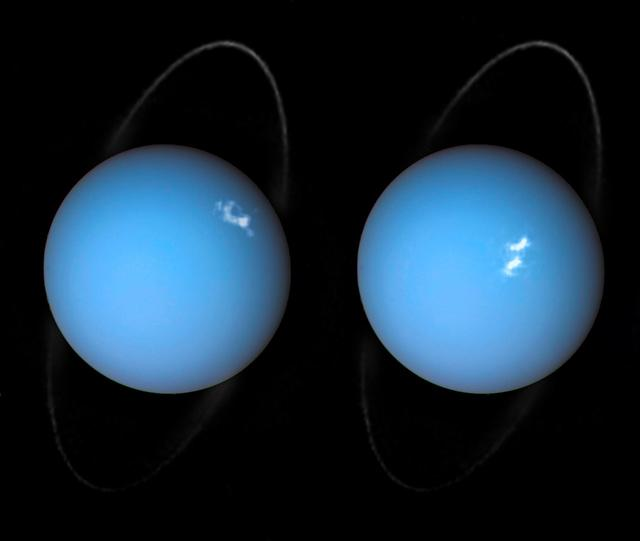
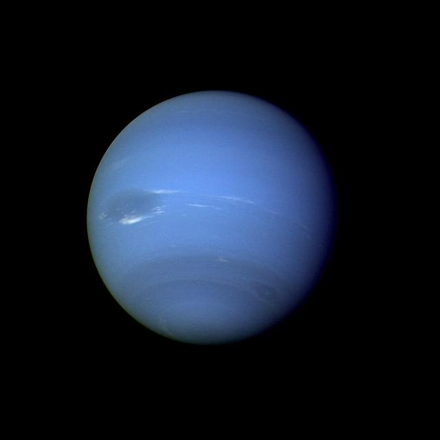
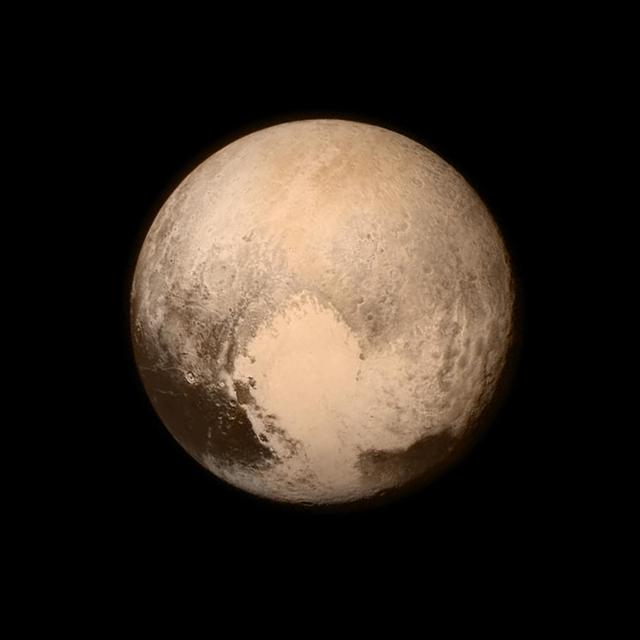

Güneş Sistemi'nin merkezinde adından da belli olduğu gibi Güneş bulunur.
Güneş bir yıldızdır ve kütleçekimi sayesinde gezegenlerin ve diğer birçok gök cisminin yörüngesinde kalmasını sağlar.
Güneş sistemi yaklaşık 4,6 milyar yıl önce oluşmuştur.
Sistemde asıl olarak 8 gezegen vardır. Bunlar: Merkür, Venüs, Dünya, Mars, Jüpiter, Satürn, Uranüs ve Neptün’dür.
Ayrıca Güneş Sistemimiz'de 5 resmî küçük gezegeninde bulunur.
Bunlar ise: Ceres, Plüton, Haumea, Makemake ve Eris’tir.
Güneş Sistemi, sadece gezegenlerden oluşmaz; yüzlerce uydu, binlerce asteroid ve kuyruklu yıldız,
Neptün’ün ötesinde Kuiper Kuşağı, daha uzaklarda ise Oort Bulutu olduğu düşünülmektedir.
Güneş Sistemi'nde çok sayıda gök cismi ve buzlu cisimlerin varlığı belirtilir.

Görsel: NASAGüneş’e en yakın gezegendir.
Güneş Sistemi’nin en küçük gezegenidir.
Güneş’e yakınlığı nedeniyle yüzeyi çok sıcaktır ve atmosferi yok denecek kadar incedir.
Katı, kayalık bir yüzeye sahiptir.

Görsel: NASAGüneş’e en yakın ikinci gezegendir.
Venüs, Dünya’nın ikizi olarak bilinir çünkü boyutları ve kütleleri birbirine çok yakındır.
Venüs’ün yüzeyi yoğun bir atmosferle kaplıdır ve bu atmosfer, sera etkisi nedeniyle gezegenin yüzey sıcaklığını oldukça yüksek seviyelere çıkarır.
Venüs, Güneş Sistemi’nde en parlak gezegenlerden biridir ve çıplak gözle görülebilir.
Kayalık gezegenlerden biridir.
Güneş Sistemi’nin en sıcak gezegenidir.

Görsel: NASAGüneş’e en yakın üçüncü gezegendir.
Şu ana kadar yaşam olduğunu bildiğimiz tek gezegendir.
Bir doğal uydusu vardır: Ay

Görsel: NASAGüneş’e en yakın dördüncü gezegendir.
Kayalık bir gezegendir.
NASA’nın robotik araçlarla en çok araştırdığı gezegenlerden biridir.
Mars, kendi ekseni etrafında dönerken Güneş’e uzaklaştıkça daha soğuk bir gezegen haline gelir.
Mars’ın yüzeyi, koyu kırmızı ve turuncu tonlarında olup, bu renklerin nedeni; yüzeyindeki demir oksittir(demir tozu).
Mars’ın iki doğal uydusu vardır: Phobos ve Deimos.

Görsel: NASAGüneş Sistemi’nin en büyük gezegenidir.
Jüpiter, gaz devi olarak sınıflandırılır ve çoğunlukla hidrojen ve helyumdan oluşur.
Jüpiter’in yüzeyinde, Büyük Kırmızı Leke olarak bilinen devasa bir fırtına sistemi bulunur.
Jüpiter’in 79’dan fazla doğal uydusu vardır ve bunlardan en büyükleri Ganymede, Callisto, Io ve Europa’dır.
Çok güçlü bir manyetik alana sahiptir.

Görsel: NASA
Güneş Sistemi’nin en büyük ikinci gezegenidir.
En belirgin özelliği çok geniş ve dikkat çekici halka sistemidir.
Satürn, gaz devi olarak sınıflandırılır ve çoğunlukla hidrojen ve helyumdan oluşur.
Satürn’ün 82'den fazla doğal uydusu vardır ve bunlardan en büyükleri Titan, Rhea, Iapetus ve Encelade’dır.

Görsel: NASA
Güneş Sistemi’nin en büyük üçüncü gezegenidir.
Dönme ekseninin çok fazla eğik olması nedeniyle adeta yan yatmış şekilde dönüyormuş gibi görünür.
Uranüs, buz devi olarak sınıflandırılır ve çoğunlukla metan ve amonyakdan oluşur.
Uranüs’ün 27'den fazla doğal uydusu vardır ve bunlardan en büyükleri Titania, Oberon, Umbriel ve Ariel’dır.

Görsel: NASAGüneş Sistemi’nin en büyük dördüncü gezegenidir.
Neptün’ün 14'den fazla doğal uydusu vardır ve bunlardan en büyükleri Triton, Nereid ve Proteus’dur.
Neptün, Güneş Sistemi’nin en uzak gezegenidir ve bu nedenle oldukça soğuktur.

Görsel: NASAPlüton, 1930 yılında keşfedilmiş ve uzun yıllar boyunca Güneş Sistemi’nin dokuzuncu gezegeni olarak kabul edilmiştir.
Ancak 2006 yılında Uluslararası Astronomi Birliği (IAU), Plüton'u gezegen kategorisinden çıkararak "cüce gezegen" olarak sınıflandırmıştır.
Plüton, Güneş Sistemi’nin en uzak bölgelerinden biri olan Kuiper Kuşağı’nda yer alır ve bu bölgedeki diğer cüce gezegenlerle birlikte hareket eder.
Plüton’un yüzeyi, metan ve azot buzlarıyla kaplıdır ve oldukça düşük sıcaklıklara sahiptir.
Plüton’un en bilinen doğal uydusu Charon’dur ve bu ikili sistem, birbirlerine oldukça yakın bir şekilde hareket eder.
Plüton’un cüce gezegen olarak sınıflandırılması, Güneş Sistemi’nin yapısı ve gezegenlerin tanımı konusundaki bilimsel anlayışın gelişmesine katkıda bulunmuştur.

Görsel: NASA